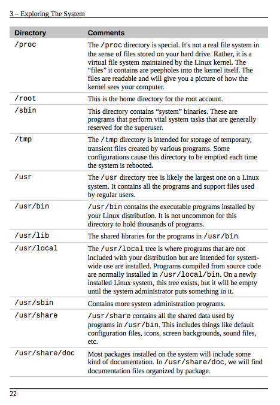
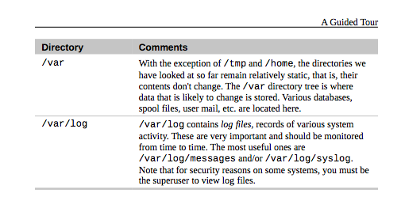

Almost all Linux distributions supply a shell program from the GNU Project called bash. The name bash is an acronym for "Bourne Again Shell", a reference to the fact bash is an enhanced replacement for sh, the original Unix shell program written by Steve Bourne.
Within a graphical user interface, we require a terminal emulator to interact with the shell. For example:
The use of Mice, Focus, Ctrl-c and Ctrl-v depend on your terminal emulator.
Like Windows, a Unix-like operating system such as Linux organizes its files in what is called a hierarchical directory structure. This means that they are organized in a tree-like pattern of directories (sometimes called folders in other systems), which may contain files and other directories. The first directory in the file system is called the root directory. The root directory contains files and subdirectories, which contain more files and subdirectories and so on and so on.
Useful tools for navigating file structures:
Absolute Pathnames: An absolute pathname begins with the root directory and follows the tree branch by branch until the path to the desired directory or file is completed.
Relative Pathnames: Where an absolute pathname starts from the root directory and leads to its destination, a relative pathname starts from the working directory
Table 3-4 from Shotts Reference: Directories found on Linux Systems

